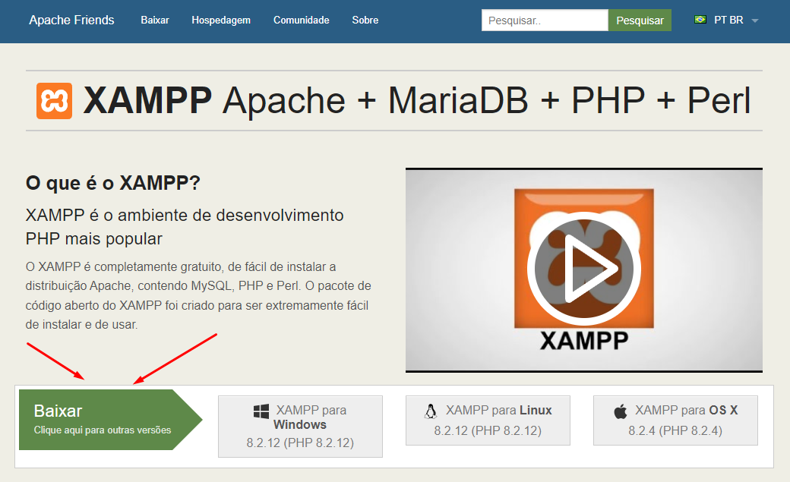
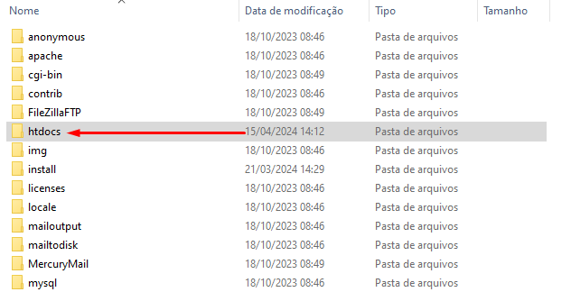

PASSO A PASSO XAMPP + PHP COMO USAR
1º Passo
Vamos Baixar e instalar o xampp Baixe aqui
2º Passo
Escolha a versão do xampp da sua preferência
3º Passo
Após o dawnload, Vamos instalar
TUDO NEXT/NEXT PADRÃO
4º Passo
Vamos iniciar o XAMPP
Vamos configurar servidor do xampp
Usar o servidor para RODAR o site PHP + XAMPP
Vamos utilizar a pasta do proprio xampp/htdocs, Você lembra aonde instalou?
No meu caso, eu segui o caminho --C:\xampp\
5º Passo
Dentro da pasta XAMPP, vamos usar a pasta /htdocs
6º Passo
Dentro da pasta htdocs é aonde você vai executar seu código, Vamos TESTAR?
NO SEU NAVEGADOR EM URL DIGITE
(localhost/PASTA_SE_TIVER/SEU_CÓDIGO.html)
PRONTINHO✅